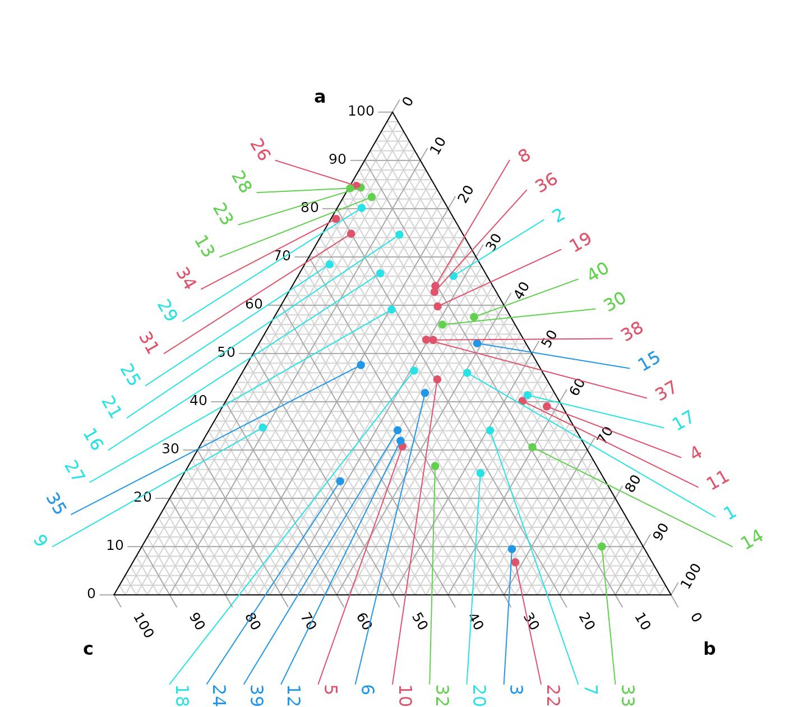
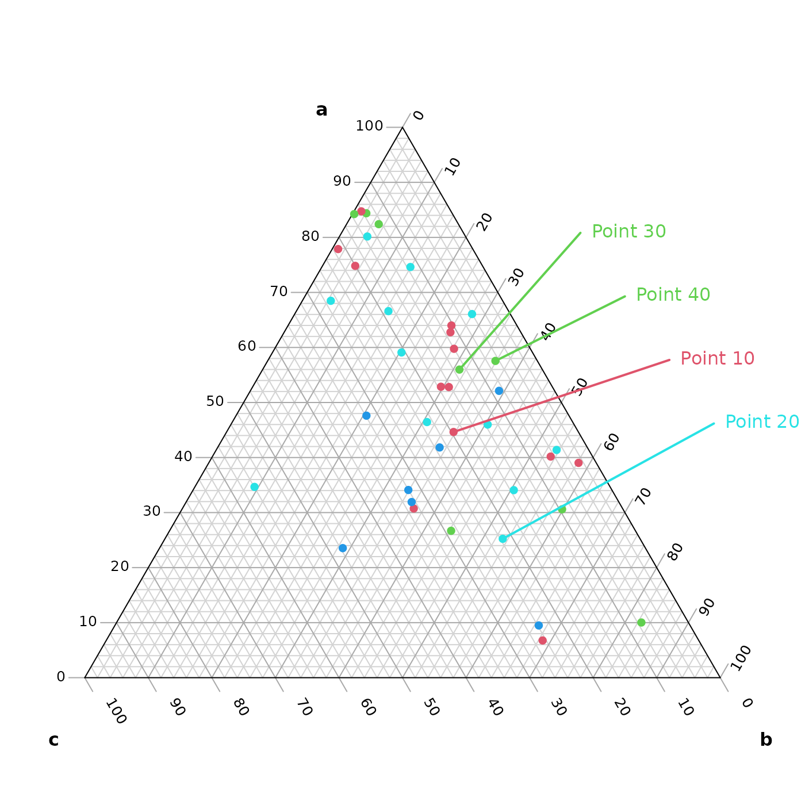

Before you start, have you read the introduction to the Ternary package?
This vignette explores how to annotate specific points within a ternary plot. We’ll start by generating some example data:
set.seed(40) # For reproducibility
nPoints <- 40
points <- data.frame(
a = abs(rnorm(nPoints, 2, 3)),
b = abs(rnorm(nPoints, 1, 1.5)),
c = abs(rnorm(nPoints, 1, 0.5)),
col = sample(2:5, nPoints, replace = TRUE),
label = paste("Point", seq_len(nPoints))
)It’s simple to plot and annotate all points with automatically positioned labels:
library("Ternary") # Load the Ternary package
# Create ternary plot
par(mar = rep(0.2, 4)) # Set figure margins
TernaryPlot("a", "b", "c")
# Add points
TernaryPoints(points[, 1:3], col = points[, "col"], pch = 16)
# Add annotations automatically
Annotate(points[, 1:3], col = points[, "col"])
If we want more control than the Annotate() function
permits, we can manually select which points to annotate and where to
place their labels.
# Create ternary plot
par(mar = rep(0.2, 4)) # Set figure margins
TernaryPlot("a", "b", "c")
# Add points
TernaryPoints(points[, 1:3], col = points[, "col"], pch = 16)
# Choose points to label
toLabel <- c(10, 20, 30, 40)
# Get Cartesian coordinates of points
# Note that we need to rotate the data.frame with `t()`
pointXY <- TernaryToXY(t(points[toLabel, c("a", "b", "c")]))
# We will manually specify where we want to position our labels.
# It can help to establish the coordinates of the figure region:
par("usr") # c(x1, x2, y1, y2)## [1] -0.6264000 0.6264000 -0.1933873 1.0594127
# And the X and Y range of the ternary plot itself:
TernaryXRange()## [1] -0.5 0.5## [1] -0.0669873 0.9330127
# Manually select locations for labels:
labelXY <- rbind(c(0.28, 0.7),
c(0.35, 0.6),
c(0.42, 0.5),
c(0.49, 0.4))[c(3, 4, 1, 2), ]
# Add labels to plot
text(labelXY,
labels = points[toLabel, "label"],
col = points[toLabel, "col"],
pos = 4, # Place text to right of coordinate
xpd = NA # Don't clip at figure limit
)
# Connect labels to points
segments(
pointXY["x", ], pointXY["y", ],
labelXY[, 1], labelXY[, 2],
lwd = 2, # Line width
col = points[toLabel, "col"]
)